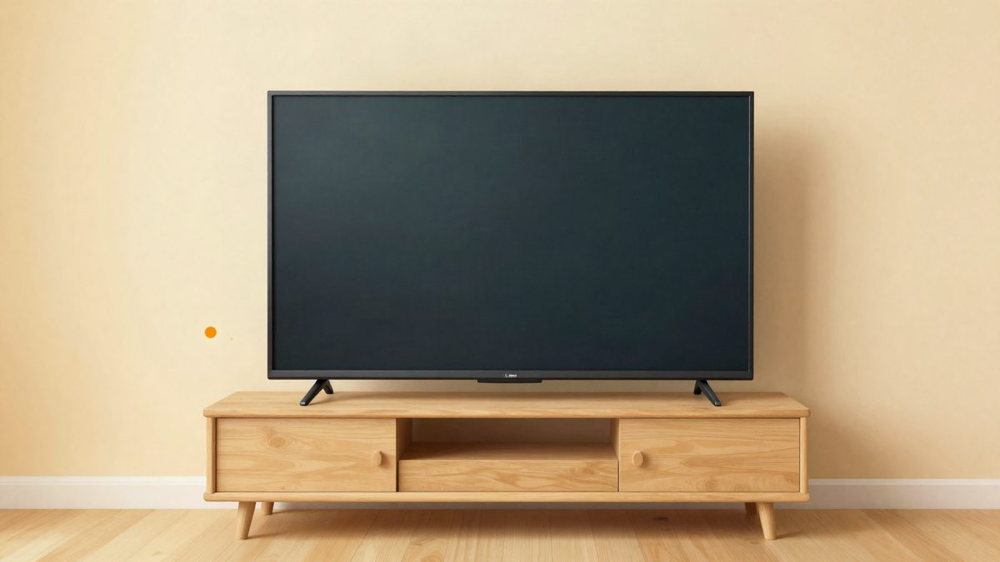

Need for Speed Underground 2 sada se može igrati u pregledniku, s online utrkama do 120 fps-a

Hobistički projekt prenio je Need for Speed Underground 2 u Chrome i Firefox. Igra radi u widescreenu do 120 fps-a, uz free roam, online utrke s prijateljima te podršku za kontrolere, volane i dodir. Izvorni kod objavljen je na GitHubu.
Need for Speed Underground 2 može se igrati izravno u pregledniku. Projekt NFSU2 na stranici nfsu2.xyz donosi originalni kod PC igre ponovno kompajliran za Chrome i Firefox. Podržani su widescreen i do 120 fps-a, free roam te online utrke s prijateljima, a igra se može kontrolirati tipkovnicom, kontrolerom, volanom ili dodirom.
Autor kaže da je igru prije otprilike 20 godina igrao s bratom, pa ju je pokušao prenijeti u preglednik kako bi opet mogli igrati zajedno. Prema njegovim riječima, prijenos je neočekivano dobro funkcionirao i projekt se prilično razrastao. Drago mu je vidjeti koliko ljudi igra.
Kako je nastao
Projekt se temelji na NFSU2Recomp-u Talhe Müderrisoğlua, statičkom rekompajleru koji x86 kod igre pretvara u C. Autor se ugledao na projekte N64: Recompiled i XenonRecomp. Fork je napravljen iz verzije NFSU2Recomp-a s MIT licencom i koristi samo kod iz te verzije. Izvorni kod objavljen je na GitHubu.
Igra, spremanje i kontrole
Svi dobivaju istu igru, bez mikrotransakcija i plaćenih prednosti. Autor traži donacije za troškove hostinga i razvoja, a podržavatelji dobivaju samo ulogu na Discordu. Igra učitava spremljene pozicije i korisničko ime te ih sinkronizira među uređajima. Za spremanje tijekom igranja treba pritisnuti Esc ili Start, zatim odabrati Garage i Save.
Na mobilnim uređajima moguće je dodirivati izbornike igre ili koristiti strelice, OK i Back pokraj njih, a kontrole za vožnju prikazuju se tijekom igranja. Može se odabrati koji palac upravlja, a postoji i upravljanje nagibom uz opciju koja drži horizont ravnim. U izbornicima rade strelice i Enter, a Esc vraća natrag. Tipke se mijenjaju u opcijama igre pod Controls.
Modovi i prijevodi
U igru su ugrađeni modovi zajednice. KyoriAsh Multi 13 languages mod donosi sinkronizirane glasove i filmove te kineski, japanski, ruski i tajlandski tekst, uz tajlandsku podršku koju je dodao Lee-Ryo. Brazilski portugalski prijevod potječe od TraduMixa i MixModsa, poljski od PLProjekta, turski od Samete Samyelija, a češki od ROXOR-a i PINĎA & syn, uz vlastite izmjene. Engleski titlovi dolaze iz moda VileStuff's English Subtitles Fixed.
Za pomoć i prijavu grešaka postoji Discord server, gdje se uz opis radnje prilaže i log. Nositelji prava mogu se javiti na e-mail adresu navedenu na stranici projekta. Igra se pokreće u pregledniku.
Izvor: Hacker News
Povezani članci
 Claude Sonnet je izradio unicorn igru u manje od mjesec dana29. listopada 2026.
Claude Sonnet je izradio unicorn igru u manje od mjesec dana29. listopada 2026.
Claude Code očistio televizore od reklama: projekt CleanYourTV ima oko 13.700 zvjezdica na GitHubu24. listopada 2026. Mario 64 u mixed realityju: igra radi u pravom 3D-u na stolu, 90 FPS-a na PICO headsetu30. listopada 2026.
Mario 64 u mixed realityju: igra radi u pravom 3D-u na stolu, 90 FPS-a na PICO headsetu30. listopada 2026.